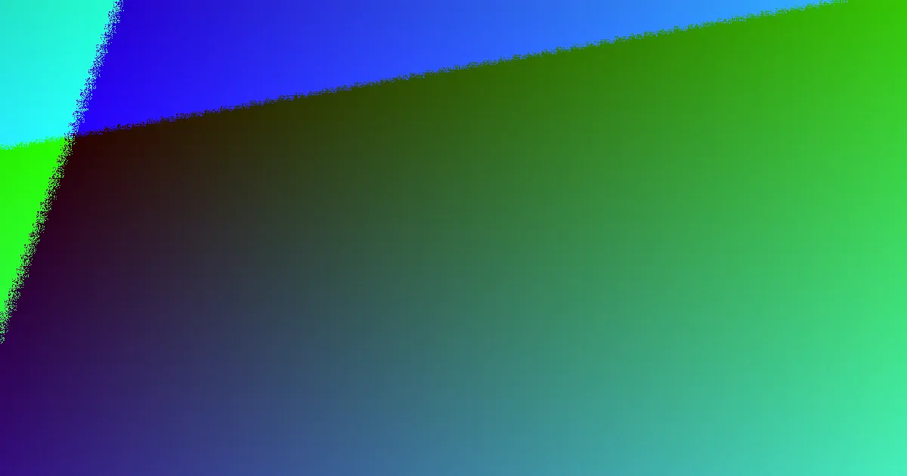

A simple accessible low wall may start at around $300 per square metre of wall face, while taller, engineered or difficult-access work can exceed $1,000 per square metre. A wall no more than 1 m high, with no surcharge load and at least 1.5 m from a building or another retaining wall, generally needs no building approval. Taller or more complex work usually needs approval and an RPEQ design or certification.
For homeowners comparing concrete sleeper retaining walls brisbane options, the practical decisions are wall height, soil loading, drainage, access, approvals and the detail included in each quote.
Concrete Sleeper Retaining Walls Brisbane Explained
Brisbane Sleeper Wall Installers describes concrete sleeper walls as steel-reinforced sleepers fitted between galvanised steel posts. The system suits garden beds, terraces and levelled lawns, but the correct design depends on more than the visible height. Soil behind the wall, drainage, nearby structures and access all affect the work.
Concrete does not rot and is not eaten by termites. Manufacturers commonly quote a design life of around 50 years, although the wall still needs appropriate support and water management. Common sleepers are 2.0 m or 2.4 m long, 200 mm high and about 75 to 80 mm thick. Post size and hole depth should come from the manufacturer's design tables or an engineer.
- Record the approximate wall length and height.
- Note steep slopes, narrow side paths and difficult machinery access.
- Identify buildings, existing walls, fences and likely loads above the retained soil.
- Ask how excavation, drainage, spoil removal and reinstatement are included.
Know when approval and engineering enter the job
A low garden wall that, together with the soil it retains, is no more than 1 m high, carries no surcharge load and sits at least 1.5 m from a building or another retaining wall generally needs no building approval. Those conditions are not a universal shortcut for every site, so the quote should explain which measurements and loads have been considered.
Outside those limits, the work needs building approval and usually a site-specific design. The design or certification must come from a Registered Professional Engineer of Queensland, or someone working under that engineer's direct supervision. Ask who is responsible for the design, certification and approval paperwork before excavation begins.
Fences add another planning question. In Brisbane, the fence and retaining wall heights count together. A combined height over 2 m above natural ground needs building approval. A quote for a retaining wall with a Colorbond fence should therefore separate the wall, fence, footing and approval requirements rather than treating the fence as an afterthought.
Read the price as a scope, not a promise
Published Brisbane price guides place installed concrete sleeper retaining walls from around $300 per square metre of wall face for a simple, accessible low wall, rising to $1,000 or more per square metre for taller, engineered or hard-to-access work. These are indicative figures, not a fixed offer. Height, excavation, access, drainage, engineering and approvals can all change the final amount.
Compare quotes using the same measurements and inclusions. A lower headline figure may exclude excavation, disposal, ag pipe, gravel backfill, geotextile fabric, engineering, approval work or landscaping. An itemised quote makes those differences visible and gives you a clearer basis for deciding.
| Low garden wall | Taller or engineered wall | Question to ask |
|---|---|---|
| Simple access and limited retained height | More excavation, design or structural requirements | Which site conditions caused the price difference? |
| May fall within the general 1 m conditions | May need approval and RPEQ design or certification | Who handles the required documentation? |
| Basic drainage and post installation | More substantial drainage, access or reinstatement | Are materials, disposal and finishing included? |
Drainage and underground services deserve early attention
A typical drainage arrangement uses slotted ag pipe at the base, free-draining gravel backfill and geotextile fabric. Water should be directed to a lawful point of discharge, not onto a neighbour's land. Ask for the drainage route and discharge point to be shown in the scope, particularly where the wall is close to a boundary, building or existing stormwater system.
Before post holes or drainage trenches are dug, a free Before You Dig Australia enquiry can identify underground electricity, gas, water and telecommunications assets. Post holes are commonly dug roughly as deep as the wall is high, but the final depth comes from the manufacturer's design tables or an engineer. Do not treat a rough rule as a substitute for the project design.
Reactive soil, a sloping block, stormwater, easements and a proposed fence can all change the questions that need answering. Share those details at the first quote stage so the installer can identify whether further design or approval work is needed.
Use the quote process to compare the right questions
The published process is straightforward: provide the suburb, approximate wall length and height, and access details; discuss the site with an installer; then review an itemised quote before deciding. The business states that there is no cost to enquire and no obligation to proceed, but an enquiry is not a substitute for checking the contractor, design responsibility and written scope.
For a broader comparison of local retaining wall work, see the guide to retaining wall installers in Brisbane. Use it alongside the project-specific questions below.
- Is the proposed wall suitable for the retained soil and any surcharge load?
- Does the scope identify posts, sleepers, footings, drainage and backfill?
- Are engineering, certification, approval fees and inspections included or separate?
- What happens if excavation finds unexpected ground conditions or services?
- How will the finished area be left after construction?
- Describe the site. Record the wall's approximate length and height, slope, access limitations, nearby structures and any proposed fence.
- Check the design path. Ask whether the wall fits the general low-wall conditions or needs building approval and RPEQ design or certification.
- Compare itemised quotes. Check materials, excavation, drainage, engineering, approvals, disposal and finishing before choosing whether to proceed.
| Option | Typical situation | Main check |
|---|---|---|
| Low garden wall | Up to 1 m under the stated conditions | Confirm height, surcharge and separation distances |
| Engineered wall | Taller, loaded, constrained or otherwise outside those conditions | Confirm approval and RPEQ design or certification |
Common questions
What is the general approval threshold for a low retaining wall? A wall is generally within the stated no-approval conditions when it and the retained soil are no more than 1 m high, there is no surcharge load, and it is at least 1.5 m from a building or another retaining wall. Confirm the actual site conditions before relying on that position.
How much can a concrete sleeper wall cost in Brisbane? Published guides place simple accessible work from around $300 per square metre of wall face, while taller, engineered or hard-to-access work can rise to $1,000 or more per square metre. The final quote depends on scope and site conditions.
Does a fence change the approval question? Yes. In Brisbane, the fence and retaining wall heights count together, and a combined height over 2 m above natural ground needs building approval.
What should drainage include? A typical arrangement includes slotted ag pipe, free-draining gravel backfill and geotextile fabric, with water directed to a lawful point of discharge. The quote should state what is included.
Who should handle a design for a taller wall? The published guidance says the design or certification should come from a Registered Professional Engineer of Queensland, or someone under that engineer's direct supervision.
This guide covers concrete sleeper retaining wall planning, approval questions, drainage, indicative costs and quote checks in Brisbane.